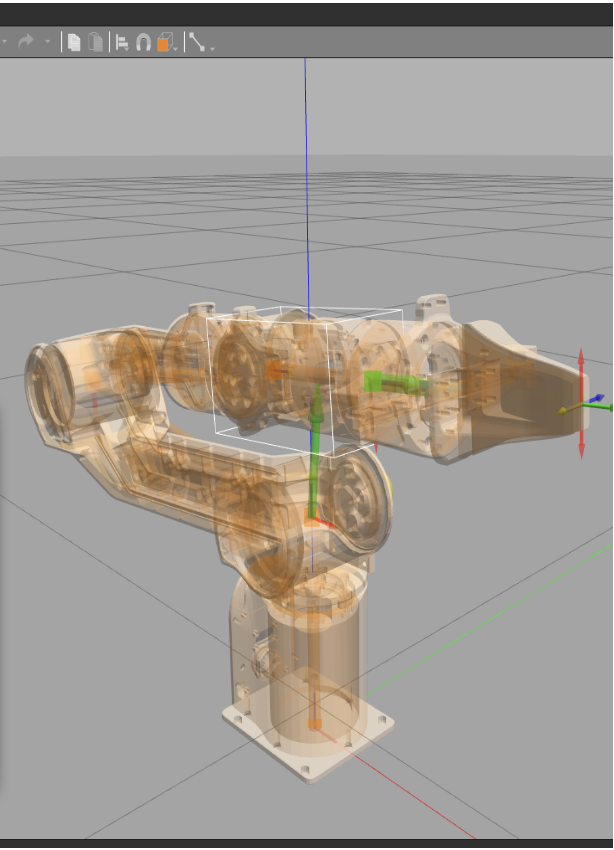

This project was focused on robotics software, dynamics modeling, and control systems. While it did not involve any mechanical design or fabrication of physical hardware, it served as a critical platform for implementing ROS 2 integrations, URDF corrections, and closed-loop torque-control algorithms on a commercial manipulator.
Quick highlights
- Platform Integration: Worked on the AgileX PiPER 6-DOF robotic arm as a hardware research platform.
- URDF Calibration: Corrected the robot's Unified Robot Description Format (URDF) file, including joint axes, link frames, and inertial parameters.
- Digital Twin: Built a ROS 2 + Gazebo digital twin environment for safe trajectory testing before hardware deployment.
- Rigid Body Dynamics: Used the Pinocchio library for efficient multi-body dynamics computation and joint torque estimation.
- Torque Control: Implemented inverse-dynamics torque-control experiments using live joint feedback.
- Experimental Validation: Tested trajectory tracking accuracy, gravity compensation, and external-disturbance response.
- Platform Roadmap: Developed the platform toward impedance control, task-space control, and sim-to-real manipulation experiments.
Video Demos
Design & Media Focus — Setup & Simulation


Equipment · methods
Platform
AgileX PiPER 6-DOF robotic manipulator (commercial)
Software Stack
ROS 2 · Gazebo · Pinocchio
My contribution
URDF correction · Gazebo digital twin · inverse-dynamics torque control
Experiments
Trajectory tracking · gravity compensation · disturbance response
Impact / outcome
Validated inverse-dynamics torque-control on hardware, backed by a high-fidelity ROS 2 digital twin and precise multi-body dynamics computed via Pinocchio.